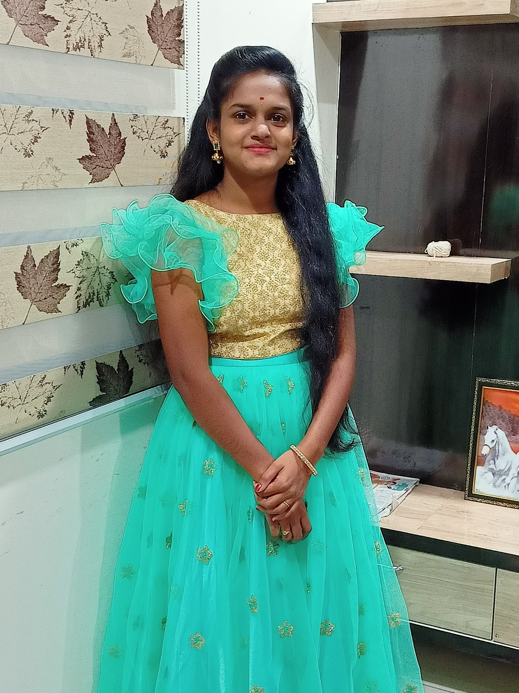

Data Science and Artificial Intelligence Student
Hyderabad, Telangana | madhavireddy123r@gmail.com | +91-7013983452
Download ResumeMotivated Data Science and Analytics student who wants to use my skills in data analysis, machine learning, and visualization to solve problems and help businesses make better decisions.
Built a content-based and collaborative filtering system to suggest books based on user input. Developed an interactive frontend using Streamlit and deployed on Streamlit Cloud.
Analyzed Kaggle’s LinkedIn job postings dataset to find job demand, salary trends, and experience level insights. Performed data cleaning, EDA, and visualization using Python libraries.
Developed a machine learning model to predict the winning chances of IPL teams based on match data. Collected and cleaned historical data, applied feature engineering, and trained using Scikit-learn. Built a Streamlit web app for live match predictions.
Learned Java, SQL, and API testing using Postman. Practiced writing Java code, working with databases, and testing APIs. Developed and tested APIs to enhance backend reliability and debugging efficiency.
Email: madhavireddy123r@gmail.com
Phone: +91-7013983452
GitHub: github.com/madhavireddy2002
LinkedIn: linkedin.com/in/madhavi-reddy-71a59a317
© 2025 Madhavi Machannagari — Data Science & AI Portfolio